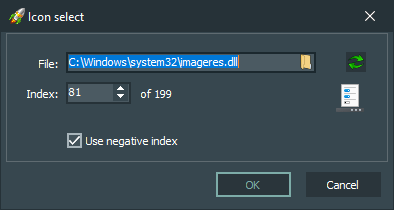

Interface elements:
-
File
Contains the path to the file from which the button icon will be loaded.
-
Index
Contains the index number of the icon in the file specified in the "File" parameter.
-
«OK» button
Confirms changing the icon of the selected button.
-
«Cancel» button
Doesn't confirm changing the icon of the selected button.